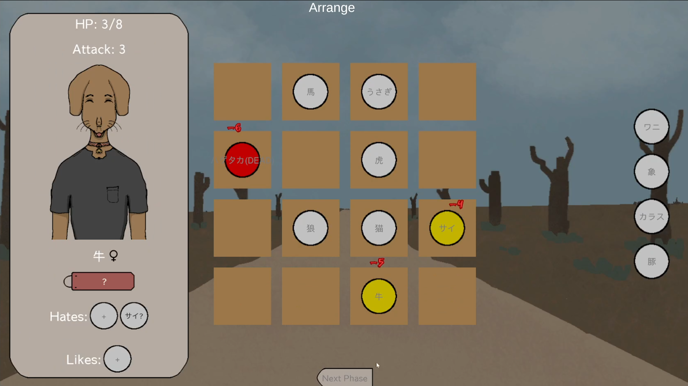
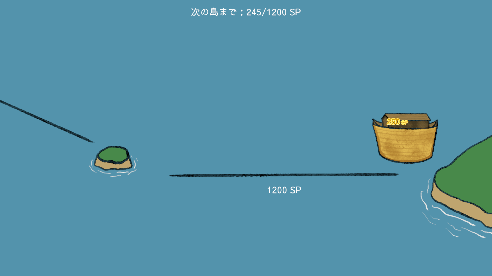
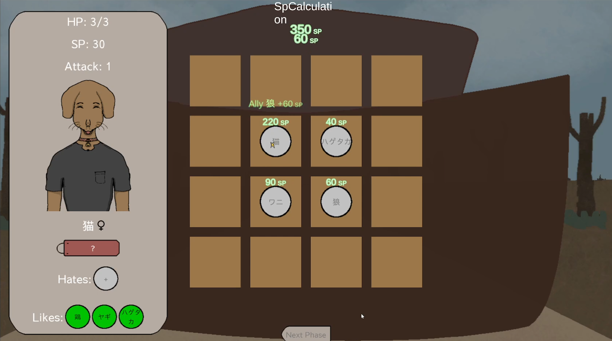
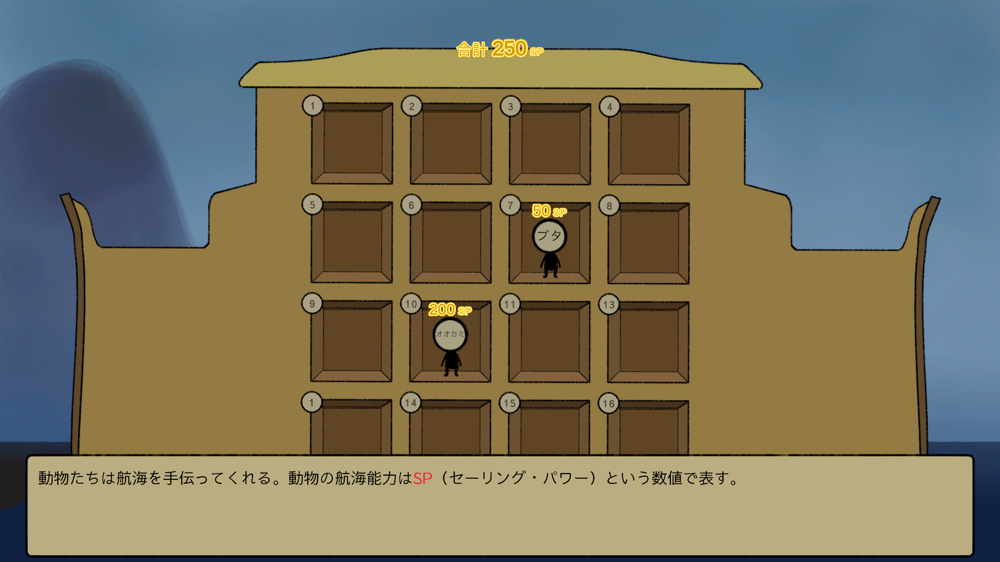
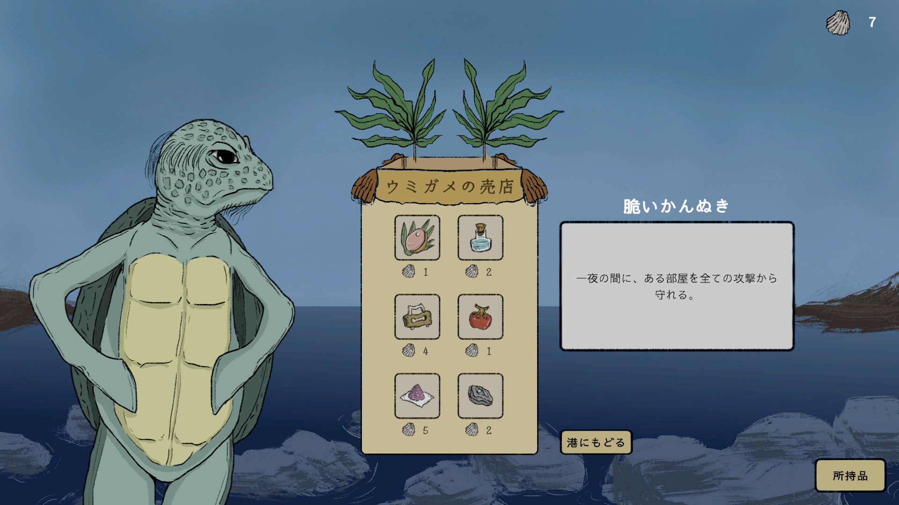
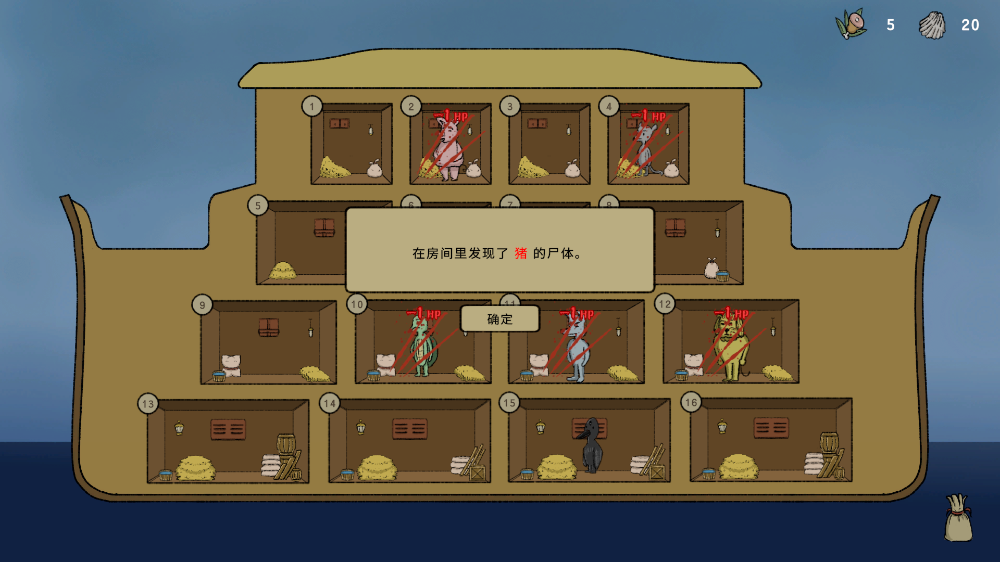
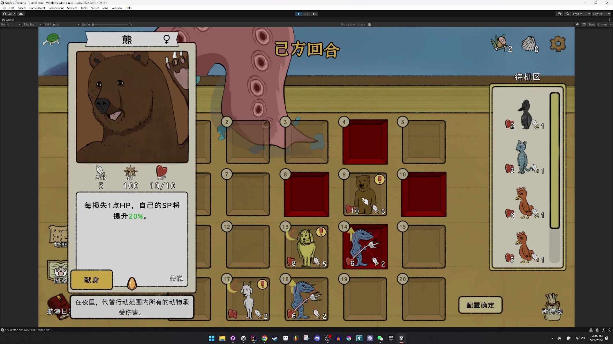
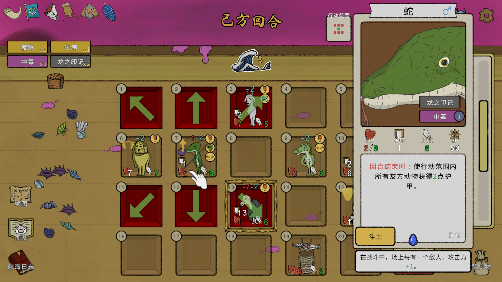
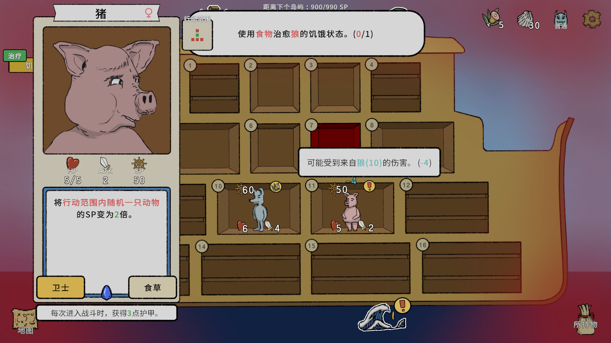
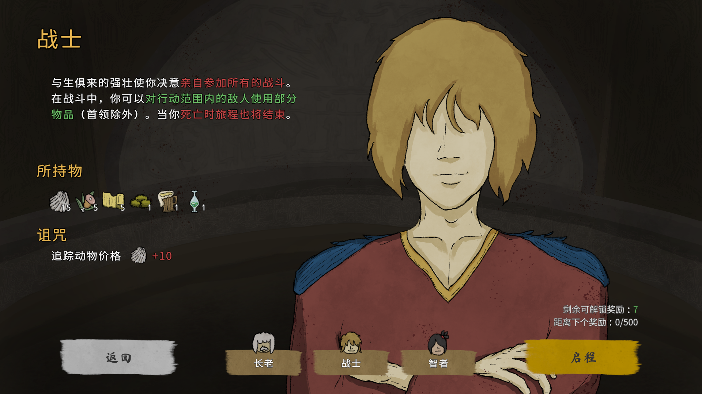

《诺亚的困境》开发日志#3：设计回顾
要怎么样去设计一款游戏？如果从一张完全空白的画布出发，这个过程将会异常艰难，好比美术老师叫你用尽全力去画一张好画，但是却不告诉你要画什么，要你自由发挥。然而只要有了任何一点限制，你就可以围绕它展开想象，在一个既定的空间里展开设计，而这种设计也将可以很好地被评判。这种限制在做游戏时最常以“类型”的形态出现。做不同类型的游戏，相当于将自己置身于不同的限制之中，去解答不同类型游戏所呈现的设计问题。当然，如果不想从既存的类型入手，另一种常见的设计方法便是自我设限。这个限制可以是任何东西，比如“3个月内能做完的游戏”，比如“只有声音没有画面的游戏”，又比如“基于数独的规则与体验延伸出的游戏”。而这最后一个限制，正是《诺亚的困境》诞生并成长为现在样子所经历的一切设计的开端。
在设计我的上一款游戏《空箱》时，我所面对的限制是“如何在一个密闭空间里讲好一个故事”，围绕它我没有花太多的时间就设计出了整个Game Loop（游戏流程构造），这一是因为它的玩法并不复杂且很早就确定了下来，二是因为在“密闭空间”这个前提下，系统设计的可能性其实并不多。完成它的困难主要存在于内容的创作之上——每天通过点外卖的方式与不同的人交流的设想的确很酷，但是实际要怎么样去串起可能会因为玩家选择而长期中断的对话却很难——《空箱》所呈现的问题比起系统设计，更多地是内容设计上的挑战，好比我知道终点在哪里，但是却不知道去终点的路要怎么走。
而《诺亚的困境》作为一个以玩法为主且最初连类型都未敲定的游戏，则让我经历了第一次“既不知道终点在哪里，也不知道路该怎么走”的从0到1的设计挑战。《诺亚》从开发到完成，一共进行过25次每次持续一周左右的试玩测试，我对每次测试都做了记录，回过头看可以看到《诺亚》一整个进化的轨迹，想必现在玩到完成体游戏的玩家，肯定无法想象当初它竟是这个样子。对了，现在在Steam上已经可以玩到《诺亚》的免费demo了，也许先玩过一遍会能更好地理解下面的内容。（如果你想等游戏发售后第一手体验《诺亚》，也可以先跳过下面这个部分。）
设计变迁的轨迹
把25次测试的细节一一罗列出来没有必要，现在看来《诺亚》的整个设计历史可以被划分为数个大的阶段，每个阶段都有其关键的变更点，可整理如下：
数独原型期
设计：将9x9的数独的规则变体为4x4，把数字变成动物。将相同数字之间的冲突转换为不同动物之间的冲突，动物之间会存在天生的敌友关系，比如狼会把猪吃掉，所以不能把狼和猪放在一起。但如果严格按照数独规则设计，正确答案将只有一个，过于困难，于是想到设计一些特殊的动物，可以有化解冲突的特性，放哪里都可以。
问题：安排好动物的位置后，相当于这道题解完了，然后呢？假如只是一直提供更多的动物题，这个游戏将会变成严格的解谜游戏，既和诺亚方舟没有太大关系，也不是我想追求的体验，不如直接玩数独。

纯粹航海期
设计：为了避免唯一解，也为了避免游戏过早结束，也为了提供更多的正向反馈，决定加入航海力的概念：每只动物都会有独特的提升航海力的效果，通过正确摆放后与其他动物联动激活。这么一来动物组合便没有了严格的正误之分，只会存在最优解，解法越好航海力越高，船也会开得越快。明确了这款游戏的主要目的是从起点开船抵达终点，与诺亚方舟运动物的设定吻合。
问题：由于动物间的敌友关系是隐藏的，只能通过试错（放错了的话第二天动物会互相攻击）识别，难度非常高。在能接收到来自航海力的正向反馈前就已经被识别难度的负面反馈压倒了。



道具航海期
设计：为了降低识别动物间敌友关系的难度，最先考虑到的是加入诺亚的种种技能，比如保护一个动物不受伤害、揭露一个动物的敌友关系等，但是想到特技的长久存在可能会使游戏变得过于简单，于是决定把这些效果做成道具。如果是道具的话，使用次数是有限的，选择购买哪些道具也会给游戏带来一层策略意义。直到这个时候，我才意识到《诺亚》不应该是一款解谜游戏，而是一款策略游戏。
问题：道具的出现确实降低了难度，而通过增加策略性也增添了游戏的乐趣，但由于敌友关系是固定的，解完这道题相当于游戏结束的老问题依然存在。


战斗航海期
设计：如果我不想玩家解完一道题就结束，那我是不是应该多加几道题？如果方舟上的动物存在着固定的敌友关系，那么让玩家重摆方舟上的配置显然不现实。那么方舟之外呢？顺着这个方向思考，我最终决定给《诺亚》加入战斗。在战斗中由于敌人出现的位置每次都不一样，还会移动，相当于每次战斗甚至每个回合都是一道新的题，而且由于航海与战斗的结算几乎共享规则，玩家知道了要怎么航海，就也自然地知道了要怎么战斗。
问题：实际体验下来，加入战斗确实让游戏第一次脱离了静态数独，有了交互的魅力，可问题是，不够好玩——开船就算航海力不是最优解，慢慢开也始终能到终点；战斗其实只要一直保持优势位置，绝大多数时候都可以赢。另外，动物如果有天生的敌友关系且未被判断出来，在战斗中有可能会误伤友军，这个情况给我带来的只有负面情绪。

洪水航海期
设计：试着将游戏从一开始就有的动物敌友关系的设计大胆删掉，把重心转移到战斗上去。由于航海与战斗缺乏紧张感，试着加入回合数的限制，玩家需要在有限的回合数内抵达下个岛屿以及击败敌人。这么一来，《诺亚》终于从“太难”，“太简单”，第一次到了“有挑战性”的状态。这个“有挑战性”状态下的《诺亚》，确实玩起来是最好玩的，也算是亲身验证了一下“心流”理论。
问题：把敌友关系删除后，方舟上的动物一旦确定了最优解位置，几乎就不需要变动了。游戏的构造基本成型，但能让玩家发挥策略的地方太少。

成熟航海期
设计：加入动物异常状态，比如“饥饿”的动物会攻击友军，比如“无力”的动物无法发动特效。这么一来方舟上的动物即使没有敌友关系它们的位置也不再是一成不变的了，而异常状态的管理也拓宽了游戏的策略性。在这个游戏结构下，继续加入更多的物品、遗物、事件、敌人、boss战等实际内容。
问题：来到了这个阶段，游戏在大的构造上终于算是定下来了，然而还有许多设计细节需要打磨，还有一些过于繁琐的内容需要删去。其实25次测试中的大多数测试都发生在成熟航海期之后，大的构造固然重要，但有时候一个细节就可以把构造上的优势全部掩盖，所以大部分的设计时间都花在了细节上。因为涉及的内容太多无法在这里一一陈述，但我会在下个部分尝试总结细节设计上我的着眼点。

诺亚航海期
问题：最后一个大的改动发生在4月，在游戏最后的玩家内测中，第一位通关了《诺亚》的玩家在反馈里写的东西与我自己常年测试下来的一个感受不谋而合，那就是当玩家的熟练度达到了一定程度，《诺亚》存在着一种王道策略，如果没有可以媲美这一王道策略的策略，每个玩家玩到最后意识到了这一点可能就不会有重玩的意愿了。虽说我本来也很喜欢只能玩一遍的游戏，但《诺亚》作为一款roguelike游戏，我并不希望这种事情发生，所以即使冒着跳票的风险，我也决定尽量解决这个问题。
设计：如果想凭空造出与王道策略可以相抗衡的策略，那么必须存在一个之前从未存在过的解题思路，而这个思路又不能对现在的游戏设计产生过大影响（因为来不及改），思前想后我决定加入“角色”这一概念。不同角色会有足以让新策略诞生的独有特性，而这些特性都是建立在原本的规则之上的。并不是说加入了“角色”就一定能解决这个问题，但至少加入这个设计之后，我觉得《诺亚》终于达到了可以让我安心发售的水准。

时间跨度一年半，经历了7次大的改动和无数次的细节调整《诺亚》才变成了今天的样子。从0到1的过程很艰难，但也正因如此我学到了很多，现在游戏里的每一个元素，我都可以说出它存在的理由。上面所做的历史回顾也许对于没玩过《诺亚》的读者来说缺乏参考价值，也是为了自己以后做游戏可以参考，趁着现在印象深刻，接下来我会尝试总结出一些在这个过程中学到的东西（个人体会仅供参考）。
设计历程的体会
1. 从限制开始设计
游戏是对现实生活的有限模拟，这意味着它必然存在着限制。提前想好一个或几个必须遵守的限制，会让游戏设计和想象力的发挥变得相对容易。
2. 坚持不变的核心概念
一款游戏总是要有一个核心概念（core concept）来让它的每一个部分都凝聚起来，最好是在正式进入开发阶段前就定下来，以应对所有可能出现的设计选择，特别是当A与B两种选择都合理的时候，要选哪一个只能通过核心概念来判断。《诺亚》虽然从一开始就类型未定，但之所以我可以那么肯定它不该是一款纯解谜游戏，就是因为在原型阶段结束后它的核心概念就已经被定下来是“用一个基于数独的玩法来打造一个基于诺亚方舟神话的航海冒险体验”，而纯解谜游戏的形式在我看来是无法提供这种体验的。这个核心概念作为我的坐标系，帮助我在频繁迭代的时候也保持住正确的前进方向。
3. 你作为玩家的感觉往往都是正确的（所以及时且如实地记录下让你困扰的地方）
我在每一次测试的时候都会尽量以玩家的视角游玩并记下这次游玩“最让我困扰的地方”，而几乎每次我的感觉都正确预示了游戏的问题所在，这不是因为我的感觉有多敏锐，而是玩家（包括自己作为玩家）在认真游玩时的感受总是能真实反应出游戏作为一个结构复杂的整体所带来的最终效果。玩家提的修改意见不一定好，但是觉得不对的地方往往都真实存在着问题。所以，当你试玩时觉得一个地方不对的时候，切记不要自己说服自己，而是要仔细分析它为什么会让你觉得不对，这往往都可以引导你找到真正的问题所在。
4. 一个好的设计总是能同时解决2个及以上的问题
这句话不是我说的，第一次看到是在《岩田先生》这本书里。当时读到的时候就觉得很有道理，但是这次做《诺亚》算是亲自体验了其真实性。像上一点说的那样发现了问题后，我会尝试去找各式各样的解决方案，而最后最好的方案总是可以同时改善另一个地方。虽然说这句话本身并没有提供找到这个设计的方法，但一旦拥有了这个意识，就不会简单停留在1对1的问题解决，而总是会去寻找更佳的设计方案。
5. UI设计就是游戏设计
UI设计常常被划分到美工的范畴，但经历了《诺亚》整个开发，我发现UI设计与游戏设计密不可分，有时候一个UI的改动就可以让游戏从不好玩变得好玩（反之亦然），而游戏设计上的微小变动也可能会导致整个UI需要重新设计。因此UI素材可以先不一步到位，结合上面所说的在游玩的过程中逐步改良成最符合直觉的设计，脱离了真实的玩家视角是很难设计出好UI的。
6. 没有意义的慢是一种浪费
这里所说的“慢”，可以指代游戏中一切强制玩家进行的不必要的等待或者操作。玩家的时间很珍贵，而现代人的注意力长度也越来越短，除非“慢”得有意义，不然所有多余的等待和操作都会让玩家流失继续玩下去的耐心。在无数次的测试里我对于《诺亚》的“慢”也变成了0容忍，所有的动画时长都以0.1秒的单位进行过微调，在这种严格要求下《诺亚》的游玩体验也顺畅了很多。
7. 没有完美的游戏
没有完美的游戏，即使是世上公认最好的游戏，也一定会有人不喜欢。没有完美的游戏，但世上有很多的玩家，一个游戏只要做好一个地方，就一定会有人喜欢。没有完美的游戏，所以不要想着满足所有人，这样游戏永远都做不完。没有完美的游戏，做到一个让自己满意的程度，就大胆发售吧。因为这样，我们才可以接着做下一款，对吧？
上面总结的7点，既有对于我来说新的认知，也有再次确认的观点。完成一款游戏所需要面对的设计决定是如此之多，但努力提炼出对每个项目都有意义的东西也就是上面几点，我认为学习游戏设计最好的方式仍然是自己去做并完成一款游戏。
虽然知道设计部分是做《诺亚》所面对的最大的挑战，也没有想到自己会一口气写这么多，不过也好，毕竟以后的项目可能就没有《诺亚》这个待遇了，不如趁现在多写一点。当然这不是说以后的项目就没那么认真对待了，只是可能会选择不写出来（由于时间、精力等各式各样的考量）。总之，《诺亚》的开发日志系列开了坑就会补完，还剩下两篇。
- 《诺亚的困境》开发日志#1：数独与方舟（关于原型与立项） - 已发布
- 《诺亚的困境》开发日志#2：编程上的总结与回顾（关于编程） - 已发布
- 《诺亚的困境》开发日志#3：设计上的总结与回顾（关于游戏设计） - 已发布
- 《诺亚的困境》开发日志#4：氛围与声音（关于作曲与音效）
- 《诺亚的困境》开发日志#5：海上的百年孤独（关于美术与世界观）
最后，《诺亚的困境》将很快在这个月（！）发售了，感兴趣的朋友可以动动手指加个愿望单，现在加入愿望单也会对游戏有很大帮助，在发售的瞬间还会收到邮件通知。感谢阅读，敬请期待。
GP
2025.5.1